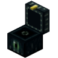

THE SMG-SMP WIKI IS STILL UNDER CONSTRUCTION. EXPECT BUGS.

What Is Variable Enderchests?
Variable Enderchests allows for a custom sizing of the enderchest. It also allows an enderchest to be opened with a command.
How Do We Use Variable Enderchests?
We use Variable Enderchests to give players a 54 slot enderchest to ensure they have enough space to store their valuables.
How Does Variable Enderchests Work?
Where Can You Get Variable Enderchests?
Variable Enderchests is free on their SpigotMC page. You can click the link below.
Variable Enderchests on SpigotMC